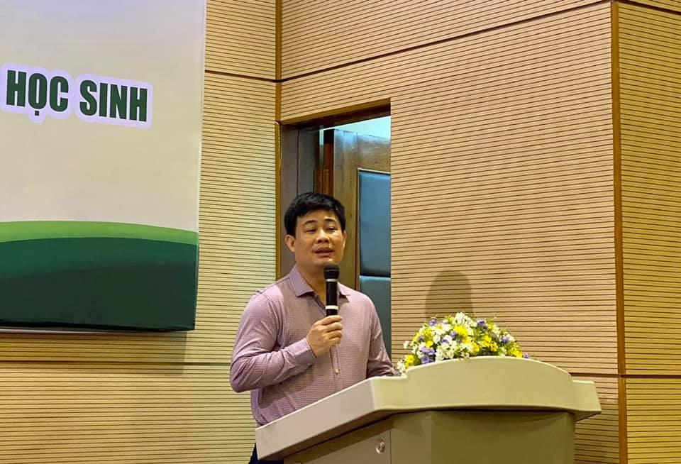

Xây dựng tài liệu ứng dụng công nghệ thông tin, triển khai và ứng dụng thiết bị công nghệ trong dạy học và giáo dục học sinh tiểu học/THCS/THPT
Hôm nay, 25/1/2021, tại Tp Hồ Chí Minh, diễn ra Hội thảo xây dựng tài liệu ứng dụng công nghệ thông tin, triển khai và ứng dụng thiết bị công nghệ trong dạy học và giáo dục học sinh tiểu học/THCS/THPT (Tài liệu mô đun 9). Hội thảo do Trường ĐHSP Tp Hồ Chí Minh tổ chức trong khuôn khổ Chương trình ETEP.
Tham dự Hội thảo có TS Sái Công Hồng, Phó Vụ trưởng Vụ Giáo dục Trung học, TS Đặng Văn Huấn, PGĐ BQL Chương trình ETEP cùng các tư vấn, chuyên gia độc lập góp ý tài liệu của Chương trình ETEP, đại diện các trường ĐHSP tham gia ETEP và các trường ĐH, các Sở GDĐT các tỉnh phía Nam, giáo viên và CBQLCSGDPT một số quận huyện của Tp Hồ Chí Minh.

TS Sái Công Hồng, Phó Vụ trưởng Vụ Giáo dục Trung học (Bộ GD&ĐT): "Tài liệu mô đun 9 cần hướng đến hỗ trợ thực hiện các mô đun 2,3,4"
Phát biểu khai mạc, TS Sái Công Hồng, Phó Vụ trưởng Vụ Giáo dục Trung học (Bộ GD&ĐT) nhấn mạnh, mô đun 9 cần thể hiện sự hỗ trợ của CNTT đối với việc sử dụng phương pháp dạy học, giáo dục, kiểm tra đánh giá học sinh và xây dựng kế hoạch theo hướng phát triển phẩm chất, năng lực học sinh. Tài liệu mô đun 9 cần hướng đến hỗ trợ thực hiện các mô đun 2,3,4; Cần hoàn thành và được Bộ GD& ĐT nghiệm thu trong tháng 3/2021 để triển khai bồi dưỡng trong toàn quốc vào quý II năm 2021.
TS Đặng Văn Huấn, PGĐ BQL Chương trình ETEP phát biểu tạị Hội thảo.
Theo QĐ 4660/QĐ-BGDĐT: Yêu cầu cần đạt của mô đun 9 bồi dưỡng giáo viên: Ứng dụng công nghệ thông tin, khai thác và sử dụng thiết bị công nghệ trong dạy học và giáo dục học sinh (theo các cấp Tiểu học/THCS/THPT) gồm:
(i) Trình bày được vai trò của công nghệ thông tin, học liệu số và thiết bị công nghệ trong dạy học và giáo dục học sinh;
(ii) Phân tích, đánh giá được việc ứng dung CNTT trong hoạt động dạy học các môn học/hoạt động giáo dục qua một trường hợp minh họa;
(iii) Lựa chọn và thực hành một số ứng dụng công nghệ thông tin trong hoạt động dạy học các môn học/hoạt động giáo dục ở trường học theo Chương trình GDPT 2018 (Vận dụng các phần mềm, học liệu số và thiết bị công nghệ như internet; các hệ thống quản lý học tập trực tuyến,... để thiết kế kế hoạch bài học, hoạt động giáo dục, kiểm tra đánh giá kết quả học tập, giáo dục, quản lý học sinh,... ở trường học);
(iv) Xây dựng kế hoạch tự học và hỗ trợ đồng nghiệp nâng cao năng lực ứng dụng công nghệ thông tin, khai thác và sử dụng thiết bị công nghệ trong hoạt độngdạy học, giáo dục và quản lý học sinh ở trường học.
Các đại biểu tham dự Hội thảo.
Mô đun 9 bồi dưỡng CBQLCSGDPT: Ứng dụng công nghệ thông tin, truyền thông trong quản trị trường tiểu học/THCS/THPT: Yêu cầu cần đạt gồm:
(i) Phân tích vai trò của công nghệ thông tin, truyền thông trong quản trị nhà trường;
(ii) Phân tích, đánh giá một kế hoạch Ứng dụng công nghệ thông tin, truyền thông trong quản trị trường tiểu học qua một kế hoạch minh họa;
(iii) Xây dựng được kế hoạch hoạt động ứng dụng công nghệ thông tin, truyền thông trong quản trị trường học, gồm một số hoạt động chính sau:
- Phân tích tình ứng dụng công nghệ thông tin, truyền thông của nhà trường;
- Xây dựng các hoạt động ứng dụng công nghệ thông tin, truyền thông của nhà trường như xây dựng và sử dụng hệ thống cổng thông tin điện tử của nhà trường; triển khai hệ thống quản lý hành chính điện tử (e-office);
- Xây dựng và khai khác cơ sở dữ liệu tại nhà trường, các phần mềm và hệ thống thông tin của Bộ/Sở/Phòng GDĐT;
- Ứng dụng CNTT trong đổi mới phương pháp dạy, học, kiểm tra đánh giá học sinh; sử dụng phần mềm quản lý, sổ điện tử trong quản lý và lưu trữ thông tin của nhà trường;
- Phát triển năng lực CNTT cho GV,NV, sử dụng hệ thống học tập trực tuyến (LMS) và hệ thống quản lí thông tin đào tạo, bồi dưỡng giáo viên và cán bộ quản lí giáo dục (TEMIS);
- Xác định các điều kiện thực hiện, phân công nhiệm vụ; Định hướng thực hiện và giám sát đánh giá);
(iv) Xây dựng kế hoạch tự học và hỗ trợ đồng nghiệp để tăng cường ứng dụng công nghệ thông tin và truyền thông trong trường học.

Trao đổi tại Hội thảo